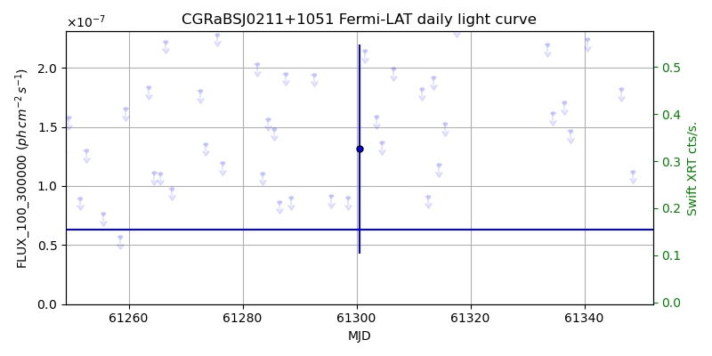
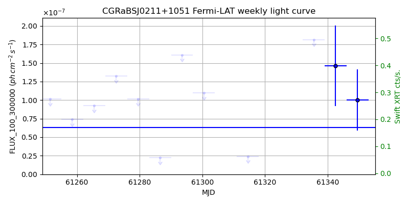
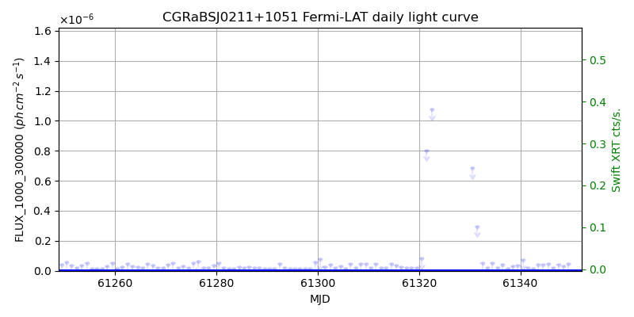
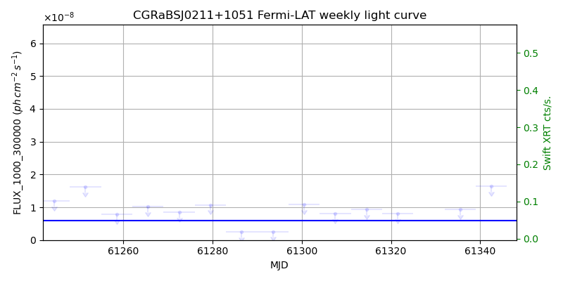

LAT Lightcurve site: https://fermi.gsfc.nasa.gov/ssc/data/access/lat/msl_lc/source/CGRaBS_J0211p1051
Swift site: https://www.swift.psu.edu/monitoring/source.php?source=CGRaBSJ0211+1051
NED: Query
Time of last update of this page: UT: 2026-11-13 16:12 (MJD: 61357.675)
| Property | Value |
|---|---|
| R.A. | 2:11:13.20 |
| Dec. | 10:51:36.0 |
| z | 0.200 |
| 3FGL SpectrumType | LogParabola |
| 3FGL PL Index | |
| 3FGL Flux_100_300000 | 6.33e-08 1 / (s cm2) |
| 3FGL Flux_1000_300000 | 5.93e-09 1 / (s cm2) |
| 3FGL Flux >200 GeV | 4.84e-12 1 / (s cm2) |
| 3FGL Extrap. Crab >200 GeV | 0.02 |
| 3FGL Flux After EBL Absorption >200GeV | 2.53e-12 1 / (s cm2) |
| 3FGL EBL Crab Fraction >200GeV | 0.01 |

| MJD | dMJD | Flux | dFlux | Frac3FGL | FracCrab>200GeV | EBLFracCrab>200GeV |
|---|---|---|---|---|---|---|
| 61348.50 | 0.50 | 1.12e-07 | 0.00e+00 | 0.00 | 0.00 | 0.00 |
| 61349.50 | 0.50 | 2.74e-07 | 0.00e+00 | 0.00 | 0.00 | 0.00 |
| 61350.50 | 0.50 | 5.33e-07 | 0.00e+00 | 0.00 | 0.00 | 0.00 |
| 61351.50 | 0.50 | 2.05e-07 | 0.00e+00 | 0.00 | 0.00 | 0.00 |
| 61352.50 | 0.50 | 4.65e-07 | 0.00e+00 | 0.00 | 0.00 | 0.00 |

| MJD | dMJD | Flux | dFlux | Frac3FGL | FracCrab>200GeV | EBLFracCrab>200GeV |
|---|---|---|---|---|---|---|
| 61321.50 | 3.50 | 3.19e-07 | 0.00e+00 | 0.00 | 0.00 | 0.00 |
| 61328.50 | 3.50 | 8.60e-07 | 0.00e+00 | 0.00 | 0.00 | 0.00 |
| 61335.50 | 3.50 | 1.82e-07 | 0.00e+00 | 0.00 | 0.00 | 0.00 |
| 61342.50 | 3.50 | 1.46e-07 | 5.44e-08 | 2.31 | 0.05 | 0.03 |
| 61349.50 | 3.50 | 1.00e-07 | 4.12e-08 | 1.58 | 0.03 | 0.02 |

| MJD | dMJD | Flux | dFlux | Frac3FGL | FracCrab>200GeV | EBLFracCrab>200GeV |
|---|---|---|---|---|---|---|
| 61348.50 | 0.50 | 3.20e-08 | 0.00e+00 | 0.00 | 0.00 | 0.00 |
| 61349.50 | 0.50 | 4.87e-08 | 0.00e+00 | 0.00 | 0.00 | 0.00 |
| 61350.50 | 0.50 | 4.10e-08 | 0.00e+00 | 0.00 | 0.00 | 0.00 |
| 61351.50 | 0.50 | 3.38e-08 | 0.00e+00 | 0.00 | 0.00 | 0.00 |
| 61352.50 | 0.50 | 5.13e-08 | 0.00e+00 | 0.00 | 0.00 | 0.00 |

| MJD | dMJD | Flux | dFlux | Frac3FGL | FracCrab>200GeV | EBLFracCrab>200GeV |
|---|---|---|---|---|---|---|
| 61321.50 | 3.50 | 7.98e-09 | 0.00e+00 | 0.00 | 0.00 | 0.00 |
| 61328.50 | 3.50 | 1.49e-07 | 0.00e+00 | 0.00 | 0.00 | 0.00 |
| 61335.50 | 3.50 | 9.38e-09 | 0.00e+00 | 0.00 | 0.00 | 0.00 |
| 61342.50 | 3.50 | 1.64e-08 | 0.00e+00 | 0.00 | 0.00 | 0.00 |
| 61349.50 | 3.50 | 9.69e-09 | 3.02e-09 | 1.63 | 0.03 | 0.02 |
--------------------------------------------------------- Using user-supplied coords: 2:11:13.20 10:51:36.0 2000 --------------------------------------------------------- FLWO UT night of: 2026-11-14 Local Sid. @ Midnight: 03:09 Sunset (-15.0) (local, UT): 18:35 01:35 Sunrise (-15.0) (local, UT): 05:42 12:42 Moonrise (local, UT): Moonset (local, UT): 20:50 03:50 Moon phase: 0.22 --------------------------------------------------------- AzTime LSID UT Obj_el Obj_az Mn_el Mn_az Sep. --------------------------------------------------------- 18:35 21:44 01:35 25.1 92.4 20.1 218.2 110.7 19:05 22:14 02:05 31.5 96.6 16.0 223.7 110.5 19:35 22:44 02:35 37.8 101.3 11.6 228.6 110.3 20:05 23:14 03:05 44.0 106.5 6.9 233.2 110.1 20:35 23:44 03:35 50.1 112.8 2.0 237.3 109.9 21:05 00:14 04:05 55.8 120.6 -2.2 241.2 109.7 21:35 00:44 04:35 61.0 130.6 -9.0 244.8 109.5 22:05 01:14 05:05 65.4 143.8 -14.6 248.2 109.2 22:35 01:44 05:35 68.3 161.1 -20.4 251.4 109.0 23:05 02:14 06:05 69.3 181.4 -26.2 254.5 108.7 23:35 02:44 06:35 68.0 201.5 -32.1 257.5 108.4 00:05 03:14 07:05 64.8 218.2 -38.1 260.6 108.1 00:35 03:45 07:35 60.3 231.0 -44.2 263.8 107.8 01:05 04:15 08:05 55.0 240.6 -50.2 267.1 107.5 01:35 04:45 08:35 49.2 248.1 -56.3 270.9 107.2 02:05 05:15 09:05 43.2 254.2 -62.4 275.3 106.9 02:35 05:45 09:35 37.0 259.4 -68.4 281.1 106.6 03:05 06:15 10:05 30.6 264.0 -74.2 289.9 106.2 03:35 06:45 10:35 24.3 268.2 -79.6 306.2 105.9 04:05 07:15 11:05 17.9 272.1 -83.2 343.5 105.5 04:35 07:45 11:35 11.5 276.0 -82.1 35.1 105.2 05:05 08:15 12:05 5.3 279.8 -77.4 61.2 104.9 05:35 08:45 12:35 -0.5 283.7 -71.8 73.4 104.5 05:42 08:52 12:42 -1.5 284.5 -70.5 75.2 104.5 --------------------------------------------------------- Dark hours >55 deg.: 4.07 srcstart (UT): 2026-11-14 04:00 srcend (UT): 2026-11-14 08:05